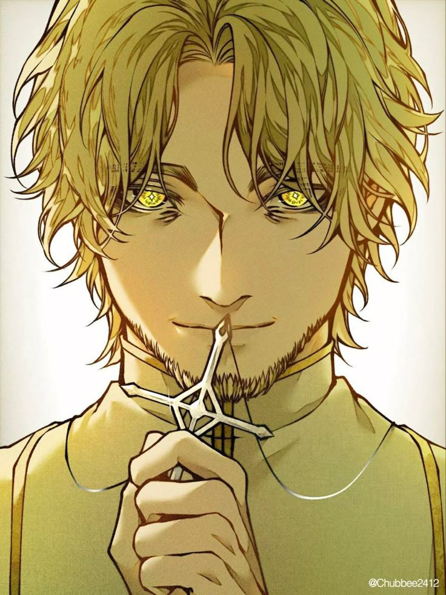

AAdam existe en los márgenes de la narrativa durante gran parte de la obra, presente en los acontecimientos de maneras que solo se hacen visibles en retrospectiva. Su capacidad para percibir y analizar la psicología de las personas, de los grupos, de las civilizaciones enteras, lo convierte en un arquitecto silencioso de eventos que otros creen haber iniciado libremente.
No es un manipulador en el sentido burdo: no necesita amenazar ni coaccionar. Simplemente comprende los mecanismos que mueven a los seres racionales con tal profundidad que puede predecir y, en ocasiones, dirigir sus acciones con una precisión que parece sobrenatural incluso en un mundo donde lo sobrenatural es cotidiano.
\"No necesito mostrarte el camino. Solo necesito conocerte lo suficiente como para que lo elijas tú mismo.\"
Adam lleva la Secuencia del Espectador —la misma que Audrey Hall— a su expresión más elevada posible. Mientras Audrey puede leer las emociones y la psicología de individuos con una claridad sobrehumana, Adam comprende la psicología en un nivel tan fundamental que su visión abarca no personas concretas sino arquetipos, patrones, la mecánica profunda que subyace al comportamiento humano como especie.
Esta perspectiva lo hace simultáneamente más poderoso y más distante que cualquier ser que opere a escala individual. Ve el bosque con tal claridad que los árboles, a veces, parecen intercambiables.
Lo que Adam quiere, y por qué lo quiere, es una de las preguntas que la obra responde de manera gradual y deliberada. Sus objetivos —cuando se revelan— resultan coherentes con una mente que ha observado el mundo durante un tiempo inimaginable y ha sacado conclusiones que los seres de vidas ordinarias no podrían alcanzar.
Su papel en el arco narrativo global de Lord of Mysteries es fundamental: no como antagonista en el sentido convencional, sino como una fuerza que da forma a los eventos desde posiciones que ningún otro personaje puede ocupar ni comprender completamente.
La relación entre Adam y Klein es una de las más complejas y significativas de la obra. Adam conoce a Klein de maneras que Klein no puede conocerse a sí mismo. Esta asimetría de conocimiento es una fuente constante de tensión, pero también de algo que podría aproximarse al respeto genuino: Adam no subestima a Klein, lo que en sí mismo dice mucho sobre el potencial que reconoce en el protagonista.
Sus encuentros —cuando ocurren— tienen una cualidad distinta a los enfrentamientos de Klein con otros seres poderosos: no son batallas de fuerza sino de comprensión, donde la ventaja no la tiene quien golpea más fuerte sino quien entiende mejor.